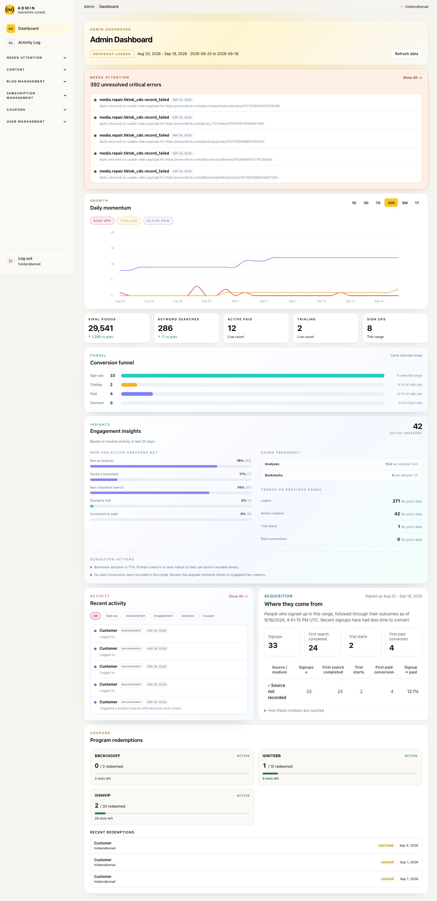

Brand Beacon screen redesigns
Left: the live app on 19 Sep. Right: the redesign, with a short note beside each change. Updated 30 Sep after the call with Ivan.
The redesigns are clickable. Press Scroll inside on any screen to scroll it like the real app, or open it full size.
Research and live bugs from 19 Sep
RESEARCH, 19 SEP: what the market does
Checked: TikTok One, Kalodata, FastMoss, Reacher, Euka, Modash, Upfluence, Aspire, GRIN, Insense, Billo, Foreplay, Motion, vidIQ, 1of10, Viewstats, Virlo, Rival IQ, Dash Social, Sprout, Exolyt, Metricool.
- Score: every outlier tool shows a multiple (7×) against the account's usual views. Viewstats uses the last 10 videos. Suggested definition: this video's views divided by the median views of that account's recent videos. Show a worked example and mark scores early for 48h. Never say 'vs followers'. Our live app says followers in one place.
- vidIQ's top color band starts at 10×. Our live scores read 1.8K× to 8.6K×, which suggests the formula divides by followers, not usual views. That is a formula question for Ivan, not a design one.
- Sharing: Foreplay and Motion share by no-login link. Nobody safe sends cold email from the app.
- Tiny creators mostly are not on TikTok One (sources disagree on the entry bar: 1K or 10K followers). Our creator list reaches people TikTok's own tool does not.
- Competitor pricing: Reacher $199, Modash $199, Kalodata about $46 to $99, 1of10 $29 to $69, Virlo $49 to $199. BB at $99 sits in the middle.
FOUND LIVE ON 19 SEP (for Lester)
- My Feed says rhode skin has 0 breakouts. Brand searches says 55.
- The readout filter says 'New this run (200)'. Brand searches says 88 new scanned, 55 new breakouts, 0 total.
- Breakouts per week shows 0 for Sep 7 and Sep 14 on a run marked new.
- The score reads '8637x' on My Feed and '8.6K×' on the readout.
- Three Breakout Score definitions: 'unusually strong engagement for their creator's audience' (readout), 'weighted engagement relative to its creator's follower count' (analysis), and '10× above the creator's own baseline' (homepage). Ivan to pick one.
- The Library subtitle uses a dash (copy lock).
- The login page tab still says 'Outlier Vault'.
- A live sales prospect appears as a public suggested brand.
- Insights regenerate on reload (dated Sep 18, then Sep 19, with different wording).
- The sidebar background stops at 900px on long pages.
1My Feed
Unlabeled stats, 3 giant cards per row, rhode skin shows 0 breakouts

- 1The search is the same as the live app: Brand / Product toggle, Find breakouts, and Suggested brands to track underneath.
- 2One column of videos, like a Facebook feed. Each card has the video on the left and the details on the right. (Ivan)
- 3Right sidebar stays in view: This week, Your searches, Climbing keywords.
- 4Activity line when there is one: “Sam sent you this”, “14 people saved this”. Names and counts are samples.
- 5Not sorted by score. About 1 in 4 videos comes from across Brand Beacon, with no label. (Ivan)
Once the big search scrolls away, a slim search bar slides in at the top, so search is always one click away. The left menu (with the breakdowns count) and the right sidebar stay in place while the feed scrolls.

2Brand readout
Key numbers buried at the bottom, times in UTC

- 1Header card with a visual for each of the three numbers. Export creator list added. (Ivan)
- 2Section links pin on scroll.
- 3The live card, three to a row, with Share added. (Ivan)
- 4Insights are counts from this refresh, each with its videos and a Do next.
- 5Charts restyled, same data. Lester: the weekly view counts are needed for the axis.
The section links stay pinned at the top and highlight the section on screen. The left menu stays in place.

3Breakout creators: export list
Ivan: “as simple as possible … export list of creators.”
One Export creator list button on the brand readout. It opens a small panel with a preview and two ways out: Download CSV or Copy list. TikTok data only for now.
Not in the live app yet, so there is no before.
- 1The button on the readout opens the export in place, no new page.
- 2This refresh or All runs.
- 3A preview of the rows. One row per creator: handle, profile link, best breakout link, score, views, followers.
- 4Download CSV or Copy list to paste into a sheet. TikTok data only, no emails. (Ivan, Veejay)
4Share this video
The only actions are Save and open on TikTok

- 1Try it: press Share with your team and creators.
- 2The same window turns into the share view. Back to the analysis returns.
- 3Type a note, then Copy link. The note locks in.
- 4Open what they will see: the shared page shows your note on top.
- 5The Hook tab: the opening line, hook type, text on screen, visual, and a Use this hook line with Copy for a brief.
WHAT CHANGED (Ivan)
- The live analysis window stays, with one big Share with your team and creators button.
- Share turns the same window into the share view. No pop-up on top of a pop-up.
- Add a note, then Copy link or Download PDF. The note shows on top of the shared page.
- The shared page matches the window, with one sign-up call to action. Dev note: it switches to UGC Breakouts later.
5My Brand Intelligence PAUSED
Paused by Ivan on 28 Sep. The mockup stays in the repo for later.
Admin: the data points list from 28 Sep
Ivan, 28 Sep: “there’s too much to process here. can we start with the valuable list and priority of data points that we want to track, start with summaries, then we’ll break it down further.”
So the eight admin screens are parked and this is the starting point: the data points, in priority order. Priority 1 is the summary, one number each, this week against last week. Priority 2 and 3 come once the summary is agreed. Pages for blog, coupons and the video index are admin tools rather than data points, so they are left out for now.
| Priority | Data point | Shown as | Tracked today? |
|---|---|---|---|
| 1 | New sign-ups, team and Ignite accounts excluded | this week vs last week | Partly. Counts disagree across pages and our own accounts count as customers. |
| 1 | Paying customers and MRR | count, new paid, cancelled, MRR | Partly. Paid count yes, MRR not tracked. |
| 1 | Free to paid | % converted, and how many used a coupon | Partly. 3 of the 4 paid conversions used a coupon. |
| 1 | Where sign-ups come from | by channel or ref link | No. Every source reads “not recorded”. |
| 1 | Activation | signed up, ran a first search, ran a first breakdown | Partly. Searches are logged, the step-by-step count is not. |
| 2 | Free quota walls | how many hit the 4th search and 4th breakdown wall, and how many upgrade from it | No. New with the v4 flow. |
| 2 | Shares | links created, links opened, sign-ups from a shared page | No. New with Share. |
| 2 | Failed searches and errors | grouped by type | Partly. 392 errors listed one by one, mostly one repeating Apify error. |
| 3 | Most searched brands and products | top 10 this week | Yes, in Searches and the Keyword Index. |
| 3 | Second-week return | signed in again 7 to 14 days after sign-up | No. |
| 3 | Cost per search | Apify spend divided by searches | No. |
To confirm: is this the right top 5? The summary screen built from it is the next row.
The earlier eight-screen pass is still in the repo (screens/admin-*.html) if any piece of it is useful later.
BBB admin: dashboard
Names and emails hidden. Errors on top, flat charts, no visitors in the funnel

WHAT CHANGED
- Same sections and numbers as the live page, with the new look.
- From the call: the funnel starts at unique visitors and errors move to the bottom. (Ivan)
- Added: names and emails on activity, plus growth signals, most searched and cost per search.
- The live numbers still disagree (12 paid vs 4, 8 sign ups vs 33). A data fix, not a design one.
- 1Header card with the live range pills and Refresh data.
- 2The live five numbers, each with an icon.
- 3Daily momentum as smooth lines, with hover.
- 4The funnel starts at unique visitors. (Ivan)
- 5Recent activity shows who: name, email and time. People shown are placeholders.
- 6Coupon redemptions show who redeemed.
- 7New: Growth signals (free limit walls, shares, coming back) and Searches and cost. Sample numbers until tracked.
- 8Errors at the bottom. (Ivan)
Dev spec for Lester
DEV SPEC FOR LESTER
One definition per number, used on every admin page. Table names are our best guess from the admin screens, so correct them where the schema differs.
| Metric | Definition | Source | Missing today |
|---|---|---|---|
| Team account | users.is_internal = true, set once per account (staff, Ignite, test). Every metric below starts with WHERE NOT is_internal. | users (new column) | No flag exists. Needs the column plus a one-off backfill from the current team list. |
| Comped account | Active subscription whose coupon takes the price to $0 (IVANVIP, IGNITEBB, BBCN100OFF if 100% off). | subscriptions, coupon usage | Discount amount per coupon is not shown in admin. |
| Paying customers | COUNT(DISTINCT user_id) FROM subscriptions WHERE status = 'active' AND NOT internal AND NOT comped | subscriptions (status values match Stripe: active, trialing, past due, canceled) | Nothing new, only the two exclusions. |
| MRR | SUM(price after discount, yearly / 12) over paying customers, read from Stripe | Stripe subscriptions | Not stored or shown anywhere today. |
| Unique visitors | Distinct visitors to brandbeacon.io in range, bots and our own IPs left out | Site analytics on the landing page (Plausible or GA4), read by API | Not captured. Needed for the first step of the funnel. |
| New sign-ups | COUNT(*) FROM users WHERE created_at IN range AND NOT internal | users | The old chart (8) and funnel (33) disagree for the same range. Use this one query for both. |
| Trial starts / trial to paid | Trials with a start date in range; of those, how many are paying customers today | subscriptions (trial end date) | Both live trials on 18 Sep were team accounts. The clean live count is 0. |
| Sign-up to paid | Sign-ups in range who are paying customers today, divided by sign-ups in range | users + subscriptions | Coupon upgrades count as paid today. |
| Sign-up source | First-touch utm_source, utm_medium and ref, saved on the account at sign-up | users (new columns), cookie set on landing | Not captured. All 33 read “not recorded”. |
| Searches run | COUNT(*) FROM searches WHERE status = 'completed' AND created_at IN range AND NOT internal; failed ones counted apart | searches, keyword searches | Dashboard says 286, Searches page lists 291. One query for both. |
| Analyses run | Completed video breakdowns in range, a total rather than a per-account average | analyses | Only “15.6 per adopter” is shown today. |
| Cost per search | Apify spend in range divided by all searches run (team included) | Apify run usage, stored per search | Not captured. Apify reports a cost per run, which could be saved on each search. |
| Errors by type | COUNT(*) FROM critical_errors WHERE resolved_at IS NULL GROUP BY event_key, with a mute flag per key | critical error log | Listed one row per error today (392). |
Order of work: the team flag first, since it changes every other number. Then MRR from Stripe, then sign-up source capture. Cost per search can follow.
Questions for Ivan: which accounts count as team (all Ignite logins, agency partners)? Are IVANVIP and IGNITEBB 100% off, and should coupon accounts ever count as paying? Should a week run Monday to Sunday, and in which time zone? Can Lester read the Apify account to get spend per run?